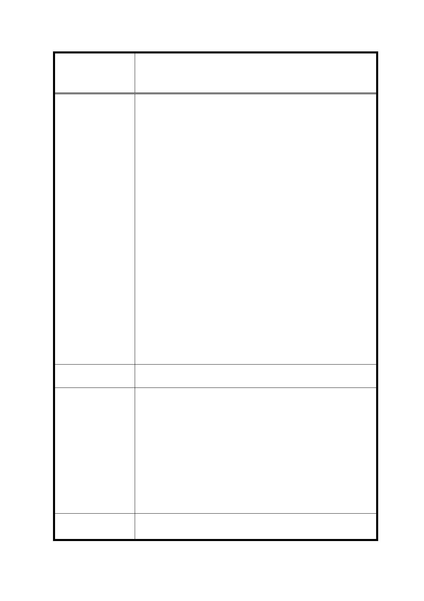

修訂臺北市信義計畫地區細部計畫（第三次通盤
案 名 檢討）案
依據「都市計畫定期通盤檢討實施辦法」第十六條之規定，
都市計畫發布實施後，人民申請變更都市計畫或建議，除有
道路用地、綠地、其他公共設施用地按實際需要檢討之情事
外，應彙集作為通盤檢討之參考，固不得個案辦理，零星變
更。惟民國 89 年計畫（修訂台北市信義計畫地區細部計畫
(第二次通盤檢討)暨配合修訂主要計畫案）將住商混合用地
變更為特定業務區後，就「住宅比例」規範而言，D2 街廓
現況作住宅使用（戶數共計 153 戶、樓地板面積共計約佔
18,758.89 平方公尺）確實高於商業使用（戶數共計 15 戶，
樓地板面積共計約佔 4,258.24 平方公尺），為保障民眾的居
住需求，住宅比例應依現況發展作調整，以符合現況住宅之
使用情形。
五、 具體訴求：
（一） 由於 D2 街廓現況住宅使用情形甚過商業使用，建請將本
案列入個案檢討，以保障土地及合法建築物所有權人之
居住權益。
（二） 關於土地及建築物使用組別容許表中規範之住宅比例
（建築物供作住宅使用之樓地板面積，不得超過該建築
物總容積樓地板面積之三分之一為原則），建議依現況發
展檢討，降低住宅比例規範上限，以促進土地使用之效
益。
建議辦法
市府回覆意見
有關特定業務區（B2-B14、C1、D1-D7、E1-E5）不得作住宅使
用之規定，考量恐影響尚未開發土地(D1、D3、B7)所有權人權
益，故建議仍維持原公展規定，即特定業務區（B2-B14、C1、
D1-D7、E1-E5）除特種零售業、特種服務業、殮葬服務業等不
得使用外，餘比照臺北市土地使用分區管制自治條例第三種商
業區之使用規定辦理。惟為塑造連續本區沿街商業活動，規定
建築物一樓及二樓不得作住宅、停車及管委會使用，且商業使
用樓地板面積總和須大於法定建築面積之 70％乘以 2 倍；申請
增額容積、移入容積或各類獎勵容積者，一樓至四樓不得作住
宅、停車及管委會使用，且商業使用樓地板面積總和須大於法
定建築面積之 70％乘以 4 倍。
委 員 會 決 議 同決議三。
45